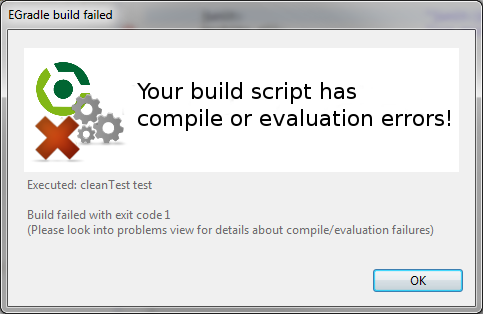
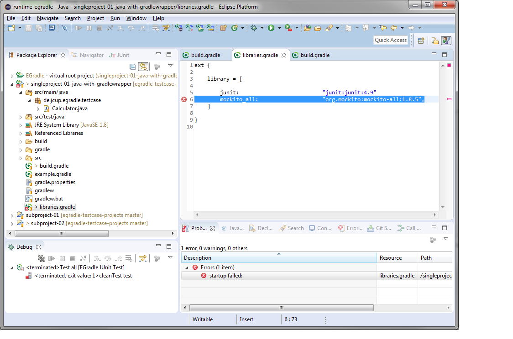
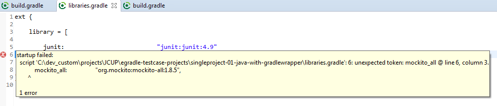
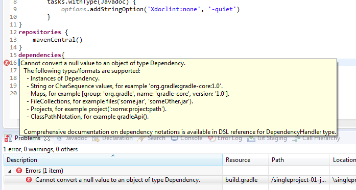
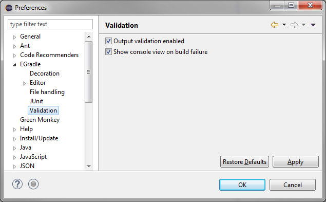

User guide
User guide
Validation
Output validation
EGradle analyzes output of last executed gradle build.
Validation dialog
If the build output contains information about compile or evaluation problems instead of normal "build failed" dialog another dialog appears:

Top
Validation markers
Inside eclipse project and in the problems view the problem is marked and can be viewed (a double click on the problems view entry will open the problem file).
Every gradle call from UI will remove old markers. The markers are not persisted, so when you restart your eclipse IDE the old markers will not be shown.

Hoovering over the error icon shows details of the problem - the description comes from gradle build

Antoher example with a conversion error:

Top
Turn off/on output validation
You can enable or disable the output validation feature in preferences:

Top